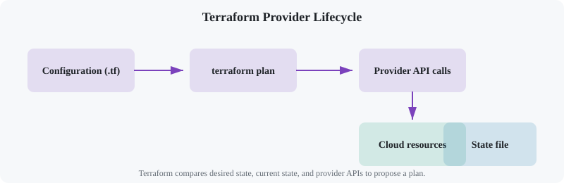
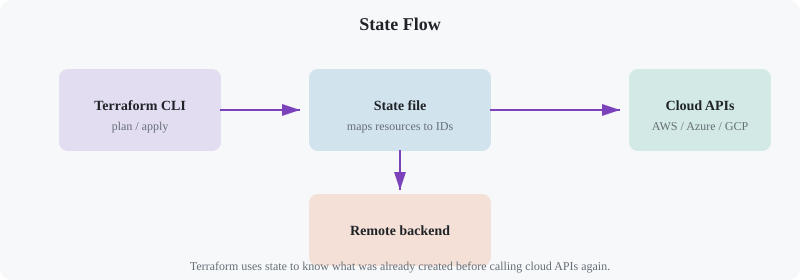
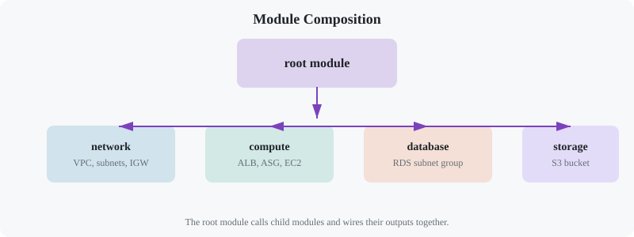
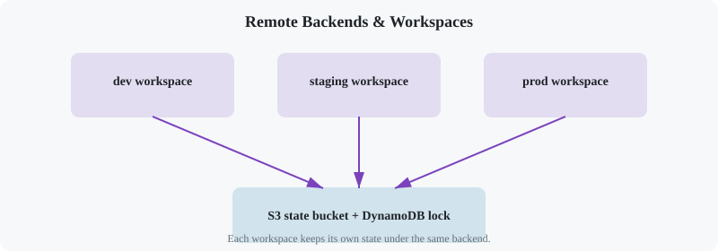

Terraform: Infrastructure as Code
Chapter 1
Introduction
Terraform is an open-source infrastructure-as-code (IaC) tool from HashiCorp. It lets you define cloud resources, networks, databases, load balancers, and more using a declarative language. Terraform then figures out the difference between your desired state and reality, and proposes a plan to get there.
Before you start
- Comfortable with the command line and basic cloud concepts.
- A free AWS, Azure, or GCP account (optional, for the capstone).
- Docker Desktop is enough for local-only experiments.
What is the main job of Terraform?
Chapter 2
Infrastructure as Code
Instead of clicking through cloud consoles, you commit your infrastructure to version control. That means pull requests, code reviews, rollback plans, and automated testing. The two big ideas are declarative configuration (say what you want) and idempotent execution (re-running the same code does not create duplicates).
Declarative
You specify the end state. Terraform decides which API calls to make to reach it.
Imperative
You write exact steps. Ansible scripts or shell scripts often work this way.
terraform
{ required_version = ">= 1.5.0" }
resource "local_file" "readme" { filename = "${path.module}/readme.txt" content = "This infrastructure is managed by Terraform." }
Run
terraform init
, then
terraform plan
, then
terraform apply
. The first run creates the file; subsequent runs do nothing unless you change the code.
Chapter 3
Installing Terraform
# macOS (Homebrew) brew tap hashicorp/tap brew install hashicorp/tap/
terraform
terraform -version# Ubuntu/Debian
wget -O- https://
apt.releases.hashicorp.com/gpg | gpg --dearmor |
sudo tee /usr/share/keyrings/hashicorp-archive-keyring.gpg
sudo
apt update
sudo
apt install
terraform# Windows (WinGet) winget install HashiCorp.Terraform
# Or
use chocolatey choco install
terraformVerify the install
terraform version
# Terraform v1.9.x on darwin_arm64Chapter 4
Providers
A provider is a Terraform plugin that translates your configuration into API calls for a platform. Providers exist for AWS, Azure, GCP, Kubernetes, GitHub, Datadog, Snowflake, Cloudflare, and hundreds more.

terraform
{ required_providers
{ aws = { source = "hashicorp/aws" version = "~> 5.0" }
} }
provider "aws" { region = "us-east-1" default_tags
{ tags = { Project = "student-demo" Environment = "dev" }
} }Provider alias example
You can configure the same provider multiple times with different settings.
provider "aws" { alias = "europe" region = "eu-west-1" }
resource "aws_s3_bucket" "eu_bucket" { provider = aws.europe bucket = "my-eu-data" }Chapter 5
Resources & State
A
resource
is the smallest managed unit in Terraform. Terraform stores the IDs and attributes of every resource in a
state file
so it can track changes over time. State can be stored locally or remotely (S3, Terraform Cloud, Azure Blob, GCS).
resource "aws_instance" "web" { ami = "ami-0c55b159cbfafe1f0" instance_type = "t3.micro" tags = { Name = "web-server" }
} resource "aws_s3_bucket" "logs" { bucket = "my-app-logs-12345" }
Common commands
-
terraform plan— show the change set without applying it. -
terraform apply— execute the plan. -
terraform destroy— remove every managed resource. -
terraform fmt— format code consistently. -
terraform validate— check syntax and provider schemas.
Why does Terraform keep a state file?
Chapter 6
Modules
Modules let you package reusable infrastructure. A module is just a folder with Terraform files, input variables, and outputs. Teams often publish modules to private registries or the Terraform Registry.

# modules/network/main.tf resource "aws_vpc" "this" { cidr_block = var.vpc_cidr tags = { Name = var.name }
} resource "aws_subnet" "public" { count = length(var.azs) vpc_id = aws_vpc.this.id cidr_block = cidrsubnet(var.vpc_cidr,
8,
count.index) availability_zone = var.azs
[count.index]
}# modules/network/variables.tf variable "vpc_cidr" { type = string default = "10.0.0.0/16" }
variable "azs" { type = list(string) default = ["us-east-1a",
"us-east-1b"]
}
variable "name" { type = string }module "network" { source = "./modules/network" name = "student-vpc" vpc_cidr = "10.1.0.0/16" }Chapter 7
Variables & Outputs
Variables make your code configurable. Outputs let you expose useful values to other modules, to the CLI, or to a CI/CD system. You can supply variables with
.tfvars
files, environment variables, or command-line flags.
variable "instance_count" { description = "Number of web instances" type = number default = 2 }
variable "environment" { type = string default = "dev" }
variable "enable_monitoring" { type = bool default = true }output "web_urls" { description = "Public DNS of web servers" value = aws_instance.web
[*].public_dns }
output "bucket_name" { value = aws_s3_bucket.logs.bucket }terraform apply -var="environment=prod" -var="instance_count=4"
# Or
use a variables file
terraform apply -var-file="prod.tfvars"Validation rules
variable "environment" { type = string validation
{ condition = contains(["dev",
"staging",
"prod"],
var.environment) error_message = "Environment must be dev,
staging,
or prod." }
}Chapter 8
Workspaces & Backends
A Terraform backend decides where state is stored. Local state is fine for learning, but teams use remote backends for collaboration, locking, and encryption. Workspaces let you manage separate environments (dev/staging/prod) from the same code.
terraform
{ backend "s3" { bucket = "my-tf-state" key = "terraform.tfstate" region = "us-east-1" dynamodb_table = "terraform-locks" encrypt = true }
} # Then use the workspace name to name resources locals
{ env = terraform.workspace }
Workspace commands
terraform workspace new staging
terraform workspace select staging
terraform workspace list
terraform applyChapter 9
Loops, Conditionals & Dynamic Blocks
Real infrastructure is repetitive. Terraform gives you
count
,
for_each
, and
dynamic
blocks to keep configurations DRY and type-safe.
resource "aws_iam_user" "devs" { for_each = toset(["alice",
"bob",
"carol"]
) name = each.value }dynamic "ingress" { for_each = var.allowed_ports content
{ from_port = ingress.value to_port = ingress.value protocol = "tcp" cidr_blocks = ["0.0.0.0/0"]
}
}Conditional resources
resource "aws_cloudwatch_dashboard" "main" {
var.enable_monitoring ? 1 : 0
"${local.env}-overview"
file("dashboard.json") }Chapter 10
Real-World Systems
Terraform is the glue behind many platform engineering and DevOps teams. Here is how several well-known companies use it in production.
Slack
Slack uses Terraform to manage AWS infrastructure across many accounts and regions. They rely on remote state, modules, and automated plans in CI to keep thousands of resources consistent.
Lesson: remote state + module ownership scales better than flat configuration.
Netflix
Netflix combines Terraform with their own Spinnaker delivery platform. Terraform provisions immutable infrastructure, while Spinnaker handles deployment pipelines across AWS, GCP, and Azure.
Lesson: keep provisioning and deployment responsibilities separate.
Robinhood
Robinhood runs a multi-account AWS setup. They use Terraform modules to enforce security baselines, tagging policies, and least-privilege IAM across every environment.
Lesson: modules are a great place to enforce guardrails and compliance.
Lyft
Lyft’s platform team built internal tooling around Terraform to let service owners self-provision databases, caches, and queues through a catalog of approved modules.
Lesson: a module catalog turns Terraform into an internal developer platform.
GitHub
GitHub uses Terraform to manage their own GitHub organizations, repositories, teams, and access controls. The GitHub provider lets them version-control their platform configuration.
Lesson: Terraform is not only for cloud compute; it also manages SaaS platforms.
Cloudflare
Cloudflare manages DNS records, load balancers, firewall rules, and Zero Trust policies through Terraform. Changes to public DNS are reviewed, planned, and applied just like application code.
Lesson: DNS and security policy are infrastructure too.
Chapter 11
Capstone: Multi-Tier AWS Stack
Build a reusable, workspace-aware AWS deployment for a web application. The stack includes a VPC with public and private subnets, an Application Load Balancer, an EC2 autoscaling group, an RDS PostgreSQL database, and an S3 bucket for assets.
1. What is this project?
You will create a complete three-tier AWS architecture using Terraform modules. The project demonstrates networking, compute, storage, database, and load balancing resources working together in a single workspace-driven codebase. It is the kind of stack a platform engineer would hand to a product team as a starter template.
2. What it covers?
- Remote S3 backend with DynamoDB state locking.
- Workspace-based naming for dev/staging/prod.
- Reusable network, compute, database, and storage modules.
- Input variables, validation, and outputs.
- Security groups and least-privilege IAM.
- Application Load Balancer and autoscaling group.
- RDS PostgreSQL in private subnets.
3. How it is done?
Step 1 — Project layout
terraform-
aws-stack/ ├── backend.tf ├── main.tf ├── variables.tf ├── outputs.tf ├──
terraform.tfvars └── modules/ ├── network/ ├── compute/ ├── database/ └── storage/Step 2 — Remote backend
terraform
{ backend "s3" { bucket = "student-terraform-state" key = "aws-stack/terraform.tfstate" region = "us-east-1" dynamodb_table = "terraform-locks" encrypt = true }
}Step 3 — Network module
resource "aws_vpc" "main" { cidr_block = var.vpc_cidr tags = { Name = "${var.name}-${var.env}" }
} resource "aws_subnet" "public" { count = length(var.azs) vpc_id = aws_vpc.main.id cidr_block = cidrsubnet(var.vpc_cidr,
8,
count.index) availability_zone = var.azs
[count.index]
map_public_ip_on_launch = true tags = { Name = "${var.name}-public-${count.index}" }
} resource "aws_internet_gateway" "main" { vpc_id = aws_vpc.main.id }Step 4 — Compute module with ALB + ASG
resource "aws_lb" "main" { name = "${var.name}-${var.env}" internal = false load_balancer_type = "application" security_groups = [aws_security_group.alb.id]
subnets = var.public_subnet_ids }
resource "aws_autoscaling_group" "web" { name = "${var.name}-${var.env}-web" vpc_zone_identifier = var.private_subnet_ids target_group_arns = [aws_lb_target_group.web.arn]
min_size = var.min_size max_size = var.max_size desired_capacity = var.desired_capacity launch_template
{ id = aws_launch_template.web.id version = "$Latest" }
}Step 5 — Database module
resource "aws_db_subnet_group" "main" { name = "${var.name}-${var.env}" subnet_ids = var.private_subnet_ids }
resource "aws_db_instance" "main" { identifier = "${var.name}-${var.env}" engine = "postgres" instance_class = var.db_instance_class allocated_storage = 20 db_name = var.db_name username = var.db_username password = var.db_password db_subnet_group_name = aws_db_subnet_group.main.name vpc_security_group_ids = [aws_security_group.db.id]
skip_final_snapshot = true }Step 6 — Storage module
resource "aws_s3_bucket" "assets" { bucket = "${var.name}-assets-${var.env}-${random_id.bucket_suffix.hex}" }
resource "aws_s3_bucket_public_access_block" "assets" { bucket = aws_s3_bucket.assets.id block_public_acls = true block_public_policy = true ignore_public_acls = true restrict_public_buckets = true }Step 7 — Wire it together
module "network" { source = "./modules/network" name = var.name env = terraform.workspace vpc_cidr = var.vpc_cidr azs = var.azs }
module "compute" { source = "./modules/compute" name = var.name env = terraform.workspace vpc_id = module.network.vpc_id public_subnet_ids = module.network.public_subnet_ids private_subnet_ids = module.network.private_subnet_ids }
module "database" { source = "./modules/database" name = var.name env = terraform.workspace private_subnet_ids = module.network.private_subnet_ids db_password = var.db_password }
module "storage" { source = "./modules/storage" name = var.name env = terraform.workspace }Step 8 — Apply by workspace
terraform workspace new dev
terraform init
terraform plan
terraform apply
terraform workspace new prod
terraform apply -var-file="prod.tfvars"4. What did we learn from this capstone project?
- Modules keep large stacks readable and reusable across environments.
- Remote state and locking prevent teammates from overwriting each other.
- Workspaces are a simple way to isolate dev, staging, and prod without copying code.
- Outputs connect modules together in a dependency graph Terraform resolves automatically.
- Private subnets and security groups are essential for a secure multi-tier design.
5. How can I enhance this project in the future?
- Replace EC2 autoscaling with an AWS ECS Fargate service module.
- Add CloudWatch alarms and SNS notifications for the ALB and database.
- Use AWS Secrets Manager to generate and rotate the database password.
-
Add a CI/CD pipeline with GitHub Actions that runs
terraform planon pull requests andterraform applyon main. - Publish the modules to a private Terraform Registry or GitHub-backed module source.
-
Import an existing manually-created resource with
terraform importto practice brown-field adoption.
Which Terraform feature lets you run the same code for dev and prod without renaming resources by hand?
Great work! Next, put this infrastructure into a CI/CD pipeline.
Continue to DevOps CI/CD →